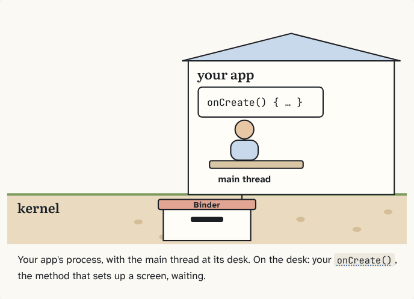

Free courses · 20 puzzles so far · about 100 minutes
Android from the foundation
Lifecycle, process death, ANRs, frozen screens: most of Android's hard parts come from a handful of ideas. This course builds them from the ground up, one small puzzle at a time, with pictures that move, until the rules stop being rules and start making sense.

How it works
Each puzzle starts with a problem Android had to solve, then gives you one building block, a picture to remember it by, and a diagram that plays itself (or step through it yourself). It ends with three questions: answer them all correctly to unlock the next puzzle, so no gap carries forward. Code names with a dotted underline open the real Android or Linux source: hover or tap them. How these courses are made, and how they're checked →
Modules
Every puzzle opens: start wherever you like. Each one builds on the ones before it; its check tells you you're ready for the next. ✓ marks the ones you've passed (saved only in this browser).
Module 1: The ground floor
What a running app is, who's in charge of the phone, and the four characters every later puzzle uses: your app, the kernel, the town hall and the post office. Know this already? Take the check →
- Start here: A running app is a process When you open an app, the phone starts it as a separate program with its own private data. That's why one app crashing doesn't take the others down.
- The kernel is in charge Something has to share the phone between all those processes. That's the core of the phone's own software, and it's the only thing that can reach into every process. Builds on 0.
- Threads are the workers Inside every process, the work is done by workers that run code one step at a time. One of them, in every app, is in charge of the screen. Builds on 1.
- Who decides about your screens Your app doesn't decide when its own screens appear or go away. A separate Android process does, and tells your app. Builds on 2.
- The post office carries letters system_server and your app are separate processes, so the town hall can't just reach in. The kernel carries its messages. Builds on 3.
- You don't call. You're called. Put the characters you've met together, and you get the one chain behind all of Android's lifecycle code. Builds on 4.
Module 2: Apps and their code
Why apps can't touch each other, how they still talk, what's inside an APK, and how an app starts so fast. Know this already? Take the check →
- Each app gets its own account The kernel keeps processes apart while they run. Android also keeps each app's files apart, by giving every app its own identity. Builds on 1.
- Letters between apps Apps can't reach into each other, but they can ask the town hall to deliver a request. For some requests, the town hall first checks whether the app is allowed. Builds on 4, 6.
- What's inside the APK Phones have different CPUs, but you ship one APK, one file for every phone. So the APK can't hold code for just one kind of CPU, and something on the phone has to run it. Builds on 0.
- Faster code, now and later Reading DEX one instruction at a time is slow. So ART translates busy code into machine code while the app runs, and the phone translates more of it later. Builds on 1, 8.
- Zygote, the process every app starts from Starting ART and reading Android's own code into memory takes seconds. Android does it once, when the phone starts, and makes every app a copy of that. Builds on 3, 6, 8.
- Sharing memory without sharing mistakes If every app were a full copy of Zygote, memory would run out fast. The kernel makes the copies share, and copies only what changes. Builds on 10.
- Starting an app, cold, warm and hot Opening an app can mean very different amounts of work, depending on whether its process and its screen still exist. Builds on 5, 10.
Module 3: The machinery
Inside a Binder call, the main thread's queue, and why one slow line freezes the screen. Know this already? Take the check →
- Inside a Binder call In puzzle 4, Binder carried messages between processes. Here's how a method call actually crosses: packed into bytes (raw data), marked with the sender's identity, and picked up by a waiting thread. Builds on 7.
- The main thread's queue Messages arrive on Binder threads, but screen code must run on the main thread. So everything for the screen waits in one line, and the main thread takes it one by one. Builds on 5, 11, 13.
- Frames, jank and ANRs Drawing the screen is just another message in the main thread's queue. So one slow message doesn't only delay a tap: it stops the screen from being drawn. Builds on 12.
- How big can a Binder call be? In puzzle 13, a call crossed Binder as bytes packed in a Parcel. The receiving process has only so much room for them. Builds on 13.
Module 4: Screens and their lives
What happens to your screen, and your data, when the phone turns, the user leaves, or the process ends. Know this already? Take the check →
- Turn the phone, lose your screen In puzzle 3, system_server moved each Activity along its lifecycle. Turning the phone sends your Activity all the way to destroyed, and builds a new one. Builds on 5.
- The ViewModel outlives the screen In puzzle 17, turning the phone threw away the Activity and everything in its fields. Here's the object made to survive that, and where it waits while the new Activity is built. Builds on 14, 17.
- When the process is gone In puzzle 18, the ViewModel survived turning the phone, but it still lives in your process. Here's what's left when the process itself is ended, and where it waits. Builds on 12, 18.
Module 4, continued (next)
Context and why it leaks, tasks and the back stack.
Module 5: Work without a screen (later)
Services, broadcasts, PendingIntent, process priority and the low-memory killer, Doze and standby buckets, WorkManager.
Module 6: Threads, coroutines and Flow (later)
How a coroutine actually waits, dispatchers, cancellation, cold and hot streams, StateFlow.
Module 7: Pixels and performance (later)
From Choreographer to the GPU, how Compose knows what to redraw, garbage collection, memory leaks.
Module 8: Libraries under the hood (later)
Dependency injection (Dagger, Hilt, Koin), OkHttp and Retrofit, Room and SQLite, R8 and startup.
Take it with you
Continue with Claude
Copies a prompt that turns Claude into your tutor for this course: what you've passed, the words you know, the questions you slipped on, and how to teach you, one small block at a time. Paste it into Claude, or any AI assistant. Built in your browser from your progress; nothing is sent anywhere.
Download for Obsidian
The whole course as an Obsidian vault: a note per puzzle linked to the puzzles it builds on (open the graph view to see the building blocks), a glossary, and every question as a flashcard for the Spaced Repetition plugin.